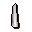
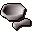
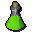

Jiminua's Jungle Store.
Inventory config
junglestoreRun by  Jiminua. Open in knowledge graph →
Jiminua. Open in knowledge graph →
Located in: Tai Bwo Wannai
Stock
| Item | Stock | Value | Sells for |
|---|---|---|---|
| 2 | |||
 Candle | 10 | 3 gp | 4 gp |
| 10 | 4 gp | 6 gp | |
| 3 | 1 gp | 1 gp | |
| 10 | 18 gp | 27 gp | |
| 12 | 21 gp | 31 gp | |
| 10 | 6 gp | 9 gp | |
| 10 | 6 gp | 9 gp | |
| 2 | 4 gp | 6 gp | |
| 10 | 12 gp | 18 gp | |
| 10 | 2 gp | 3 gp | |
| 50 | 2 gp | 3 gp | |
 Pestle and mortar | 3 | 4 gp | 6 gp |
 Antipoison(3) | 10 | 288 gp | 432 gp |
| 50 | 10 gp | 15 gp | |
| 50 | 45 gp | 67 gp | |
| 2 | 6 gp | 9 gp | |
| 10 | |||
| 50 | 40 gp | 60 gp | |
| 10 | |||
| 10 | 3 gp | 4 gp | |
| 2 | 16 gp | 24 gp | |
| 2 | 1 gp | 1 gp | |
| 5 | 56 gp | 84 gp | |
| 10 | 8 gp | 12 gp |
Shop sells at 150.0% of item value and buys at 50.0%.
This is a general store: it accepts any tradeable item.